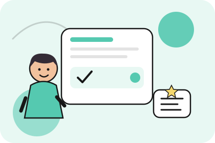

Можно годами учить английский, понимать тексты и узнавать знакомые слова на слух, но растеряться, когда собеседник задаёт простой вопрос. Мысль кажется понятной, однако подходящие слова не вспоминаются, а вместо ответа приходится долго подбирать выражения. Такое происходит не только с начинающими: без регулярной разговорной практики бывает трудно поддерживать диалог даже при хорошем словарном запасе.
Когда мы читаем, то узнаём готовые конструкции, а в разговоре должны быстро составить собственную фразу. Поэтому недостаточно запоминать новые слова и выполнять упражнения на грамматику — нужно регулярно применять знания в речи.
Почему возникает языковой барьер
Одна из распространённых причин — стремление сразу построить идеальное предложение. Например, вы хотите рассказать, что вчера ходили в кино, и начинаете сомневаться, какое время использовать. Пока вспоминаете правило, теряется нить разговора, хотя для общения достаточно простой фразы: I went to the cinema yesterday.
Вместо того чтобы мысленно переводить каждое слово с русского, постепенно привыкайте к готовым английским конструкциям. Чем чаще вы используете их в разных ситуациях, тем быстрее начинаете подбирать нужные выражения без долгих пауз.
Как развивать разговорный английский
Начните с тем, которые встречаются в повседневной жизни: знакомство, работа, увлечения, покупки и планы на выходные. Попробуйте рассказать о своём обычном дне: I get up at seven. I have breakfast and go to work. In the evening, I read a book. Затем измените рассказ, добавив сведения о вчерашнем дне или планах на завтра. Так знакомые слова и конструкции становятся инструментами общения, а не просто материалом из учебника.
Полезно тренировать и короткие диалоги. Представьте, что вы познакомились с человеком:
— Where are you from?
— I’m from Berlin. What about you?
— I’m from London.
Повторите диалог, а затем измените место, обстоятельства или вопросы. Это помогает привыкнуть к необходимости быстро реагировать на реплики собеседника. Для систематической практики можно выбрать курс разговорный английский и регулярно отрабатывать общение в типичных ситуациях.
Можно ли тренироваться самостоятельно
Даже без партнёра можно говорить вслух. Выберите знакомую тему и в течение одной-двух минут рассказывайте о своём дне, любимом фильме или планах на отпуск. Если забыли слово, объясните его другими словами вместо того, чтобы надолго останавливаться. Такая привычка помогает сохранять ход мысли во время настоящего разговора.
Иногда полезно записывать себя на диктофон. Прослушайте запись и отметьте, где возникли длинные паузы или не получилось выразить мысль. Выберите одну трудность, повторите рассказ и сравните результат. Короткая ежедневная тренировка обычно удобнее редких продолжительных занятий.
Как заметить прогресс
Оценивайте результат по тому, что вы уже можете сделать на английском. Возможно, сначала вы отвечали на вопросы одним словом, а теперь можете составить несколько предложений, рассказать о своих планах или задать встречный вопрос. Это реальные изменения, которые показывают, что пользоваться языком становится проще.
Не ждите, пока выучите всю грамматику и необходимый словарь. Начинайте с доступных тем, постепенно расширяйте их и возвращайтесь к конструкциям, которые вызывают затруднения. Чем регулярнее вы используете английский для выражения собственных мыслей, тем легче переходить от знания языка к живому общению.